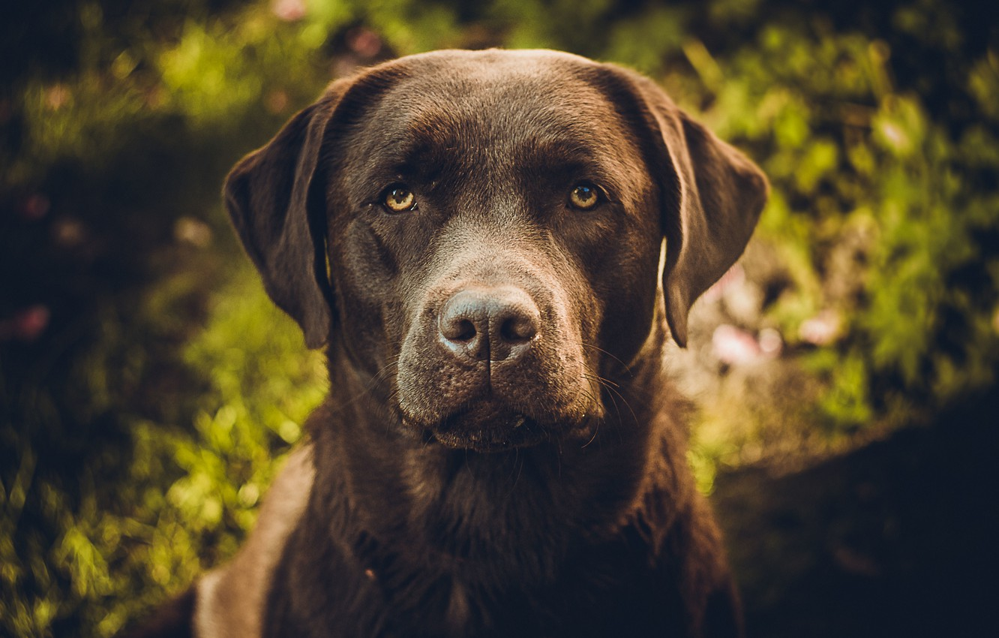

Порода лабрадор — это, определенно, одна из трех лучших пород для роли семейного домашнего питомца, но только если вы ведете активный образ жизни! Это дружелюбные, добрые собаки, любящие всех и каждого. Они социально адаптированы и могут хорошо общаться с другими животными и детьми. Они терпеливы и готовы многое прощать, но никогда не следует этим злоупотреблять. Лабрадоры крайне преданны и любят участвовать во всех семейных делах. Лают, чтобы привлечь ваше внимание к незнакомцам, но всегда оказывают гостям очень теплый прием.